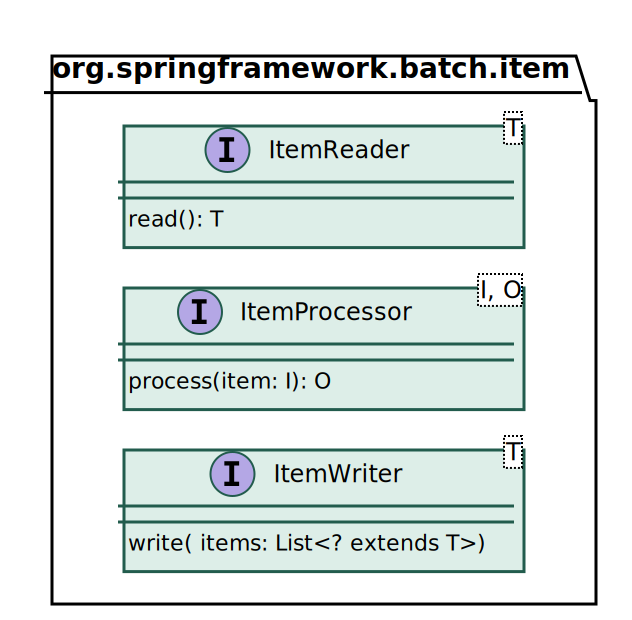

Spring-Batch

Spring-Batch verwendet Generics
Spring-Batch unterstützt JSR-352

Spring-Batch definiert die Interfaces
ItemReader<T>
ItemProcessor<I,O> und
ItemWriter<T>.
Diese Interfaces kann man in eine Job-Konfiguration einbinden
Alternativ kann man auch die entsprechenden JSR-352 Interfaces implementieren
| Eigene Implementierung möglichst unabhängig vom Framework-Code halten. |
Spring-Batch
Spring-Batch verwendet Generics
Spring-Batch unterstützt JSR-352
JSR-352

Rückgabewerte/Verhalten:
Markiert Ende der Verarbeitung
Überspringt Datensatz (wird nicht geschrieben)
Markiert Datensatz als Fehlerhaft
(Was damit geschieht, hängt von der Konfiguration ab)
public class SimpleReader implements ItemReader<Integer> {
private final Iterator<Integer> iter;
public SimpleReader(int numItems) {
iter = IntStream.rangeClosed(1, numItems).boxed().iterator();
}
@Override
public Integer read() {
return iter.hasNext() ? iter.next() : null;
}
}public class SimpleProcessor implements ItemProcessor<Integer, String> {
@Override
public String process(Integer item) {
return String.format("Item %03d", item);
}
}public class SimpleWriter implements ItemWriter<String> {
@Override
public void write(List<? extends String> items) {
System.out.println(items.stream().collect(Collectors.joining(", ")));
}
}| Writer verarbeitet eine Liste von Items. |
@Bean
Job simpleJob() {
Step simpleStep = stepBuilderFactory.get("simpleStep")
.<Integer, String>chunk(1)
.reader(simpleReader())
.processor(simpleProcessor())
.writer(simpleWriter())
.build();
return jobBuilderFactory.get("simpleJob").start(simpleStep).build();
}Möglichkeiten der Verarbeitung:
Eine Transaktion für jeden einzelnen Datensatz
⇒ zu langsam
Alle Datensätze in einer Transaktion schreiben
⇒ zu fehleranfällig, bei großen Datenmengen nicht machbar
Lösung: Daten Chunk-weise verarbeiten


Iteriert wird mit dem RepeatTemplate
Das Tasklet wird innerhalb einer Transaktion ausgeführt
⇒ Für Chunkverarbeitung müsste Tasklet über
die Elemente eines Chunks iterieren


Welche Fehler sind bei der Batchverarbeitung zu erwarten?
Wie soll damit umgegangen werden?
| Fehler | Umgang |
|---|---|
… | … |
| Datensatz überpringen | Erneut versuchen | Job abbrechen |
|---|---|---|
Programmierfehler | Verbindungsunterbrechung | Systemausfall |
Ungültiges Zeichen in Datensatz | Neustart eines Servers | Fehlende Berechtigung |
Datei defekt | Datensatz gesperrt | Nicht berücksichtigte Exception |
| Das erwünschte Fehlerverhalten gibt man bei der Job-Konfiguration an. |
@Bean
TaskletStep skipSimulationStep() {
return stepBuilderFactory.get("skip-simulation-step")
.listener(logListener())
.<Ball, Ball>chunk(6)
.reader(ballContainer())
.processor(ballProcessor())
.writer(ballContainer())
.faultTolerant().skip(InvalidBallException.class).skipLimit(3)
.build();
}verarbeitet Chunks der Größe 6,
ist fehlertolerant gegenüber InvalidBallException und
bricht nach 3 Exceptions ab.
JavaFX-SDK muss installiert sein → https://gluonhq.com/products/javafx/
Variable PATH_TO_FX muss auf das lib-Verzeichnis des SDK zeigen (Eclipse)
Aufruf mit VM arguments:
--module-path ${PATH_TO_FX}
--add-modules javafx.controls,javafx.fxmlVarianten über skipsim.model.BallContainer.skipMode einstellbar…

TaskletStep step = stepBuilderFactory
.get("retryStep") // StepBuilder
.<Integer, String>chunk(4) // SimpleStepBuilder
.reader(reader()).processor(processor()).writer(writer())
.faultTolerant() // FaultTolerantStepBuilder
.retryLimit(7) // bis zu 7 mal wiederholen
.retry(MyRetryException.class)
.backOffPolicy(new ExponentialBackOffPolicy()) // nach jedem Versuch doppelt so lange Warten
.skip(MyRetryException.class) // nach 7 Fehlversuchen diesen Datensatz überspringen
.skipLimit(3) // Maximal 3 Datensätze überspringen
.listener(loggingSkipListener())
.build();Wiederholt den Process- oder Write-Schritt bei einer MyRetryException bis zu 7 mal.
Wartet vor jedem Versuch 100ms, 200ms, 400ms, …
Überspringt den Datensatz nach 7 fehlgeschlagenen Versuchen.
Loggt übersprungene Datensätze.
Bricht den Step nach 3 übersprungenen Datensätzen ab.
Eine BackOffPolicy gibt an, wie lange vor jedem erneuten Versuch gewartet werden soll.
Die ExponentialBackOffPolicy wartet beim ersten Versuch 100ms und verdoppelt dann die
Wartezeit bis zu maximal 30s. (Ist natürlich alles konfigurierbar).
Mehr Einflussmöglichkeiten hat man durch eine eigene RetryPolicy.
(Spring-Batch bringt einige Varianten davon mit.)
Mit einer nachgelagerten SkipPolicy kann man dafür sorgen, das der Datensatz nach
n Versuchen übersprungen wird.
Die RetryPolicy hat keine Auswirkung auf Fehler beim Lesen, da nur der
FaultTolerantChunkProcessor ein RetryTemplate verwendet, nicht aber der
FaultTolerantChunkProvider. Letzterer hat nur eine SkipPolicy. |


ItemReader, ItemProcessor und ItemWriter werden automatisch als StepListener
registiert, sobald sie eines der entsprechenden Interfaces implementieren.
Für jede Listener-Methode gibt es eine korrespondierende Annotation (z. B. @BeforeRead).
Ein Objekt, das eine so annotierte Methode enthält kann genauso also Listener registiert
werden, wie ein Objekt, welches das entsprechende Interface implementiert.
Zu praktisch jedem Listener gibt es ein entsprechendes JSR-352 Pendant. Diese können genauso wie die Spring-Batch eigenen Listener verwendet werden.
Damit das automatische Registieren funktioniert, muss als Return-Type bei der Bean-Methode
eine Klasse oder Interface angegeben werden, das den bzw. die entsprechenden Listener implementiert.
@Bean ItemReader<String> myItemReader() funktioniert nicht. |
Monitoring und Tracing
Ausnahmebehandlung
Einflussname auf den Batch-Workflow
Zugriff auf Framework-Informationen
Man kann beispielsweise in beforeStep() auf Inhalte der StepExecution zugreifen
und in einer Instanzvariablen speichern. Andere (Listener)-Methoden kommen so an die
entsprechende Information. |
Kommunikation mit Batch-Framework
Parameterübergabe zwischen Steps
Interfaces ItemReader, ItemProcessor und ItemWriter implementieren und verwenden
Aufbau und Funktsionsweise des ChunkorientetTasklet
Konfiguration von Fehlertoleranz und Umgang mit Fehlern
Registrierung, Zweck und Verwendung der diversen Listener Interfaces
Job- und Step-Builder im Detail
Implementieren Sie einen ItemReader, der eine über einen Parameter einstellbare Anzahl von
Zufallsbrüchen mit Nenner und Zähler zwischen -10 und +10 liefert. Nutzen Sie dafür die
bereits vorbereitete Klasse Fraction.
Implementieren Sie einen ItemProcessor, der jeden Bruch in der Form 3/4 = 0,750 ausgibt.
Nutzen Sie dafür Fraction.toDescription().
Implementieren Sie einen ItemWriter, der alle Brüche eines Chunks in einer Zeile über System.out ausgibt.
Stellen Sie alles in einem fehlertoleranten Job zusammen, der bis zu 5 ArithmeticException (wegen
Division durch 0) zulässt.
Führen Sie den Job aus und sehen Sie sich das Job-Repository an (dieses muss natürlich entsprechend konfiguriert sein).
Welche Exceptions landen in jobExecution.getAllFailureExceptions()?
| Mit Log-Level DEBUG gibt Spring-Batch alle Exception aus. |
Erstellen Sie einen weiteren Step, der alle Brüche ausgibt, bei denen ein Fehler aufgetreten ist.
Nutzen Sie den ExecutionContext und geeignete Listener, um diese 2er-Tupel zu übergeben.
Führen Sie einen neunen Exit-Status "WARNING" ein, der zurückgegeben werden soll, sobald eine
ArithmeticException aufgetreten ist.
Sorgen Sie dafür, dass der Job bei Exit-Status "WARNING" mit Return-Code 99 beendet wird:
→ Agenda